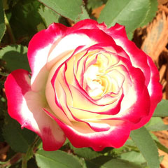
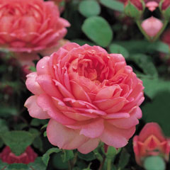
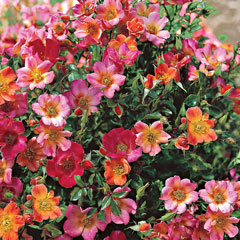

Grandiflora Roses
Grandiflora roses are a class that was created in the last century to classify crosses between Hybrid Tea and Floribunda roses that fit neither category. They are a combination of the graceful blooms of the Hybrid Teas and the repetitive growth cycle of Floribundas.
English/David Austin Roses
Although not officially recognized as a separate class David Austin - sometimes called English - roses are highly popular among consumers and retailers. David Austin started breeding roses over 50 years ago with the goal of creating a new group of roses that featured the best characteristics of both Old and Modern Roses.
Hybrid Tea Roses

Hybrid Tea roses have been the favorite of the Modern Roses, and come in a very diverse range of colors. They are known for their long, upright stems, which make them an extremely popular cut flower.
Miniature Roses

Miniature roses are miniature versions of Hybrid Tea roses. They have petite stems, leaves and flowers, and are hardy and versatile plants. Miniatures come in a wide range of colors including pink, orange, white, and yellow.
Groundcover Roses
Also known as “ landscape” roses, this type of rose was developed to fulfill the desire for a garden rose that offers color, form, and fragrance, but is also easy to care for.